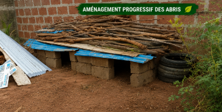

Une exploitation agroécologique à Dogoudo / Hêvié, alliant agriculture, élevage, transformation locale, formation jeunesse et économie circulaire.
Les actions de Jude avancent progressivement : élevage, aménagement du terrain, production vivrière et transformation du manioc.

Développement progressif d’un petit élevage local.

Observation, reproduction et suivi naturel des volailles.

Organisation d’abris simples et adaptés aux moyens disponibles.

Une logique familiale, écologique et progressive.
Un projet ancré dans la production locale, la formation et la valorisation des ressources du Bénin.
Tomates, laitues, piments, carottes et cultures respectueuses du sol.
Poules, pintades, cailles, lapins et volailles élevées en logique naturelle.
Déchets organiques, compost, cultures, alimentation et revenus locaux.
Transmettre aux jeunes des compétences pratiques et reproductibles.
Créer des circuits courts entre producteurs, commerçants et familles.
Utiliser les moyens locaux pour inventer des solutions utiles.
LSJ Bénin développe une approche familiale et naturelle de l’élevage, sans logique industrielle.

Des volailles évoluant dans un environnement végétal, vivant et naturel.
Un modèle adapté aux moyens locaux, basé sur l’observation et l’amélioration.
Valoriser les ressources disponibles pour réduire les coûts d’élevage.
La transformation du manioc permet de créer plus de valeur, de limiter les pertes et de soutenir les familles.

Première étape de transformation artisanale du manioc.

Préparation naturelle avant cuisson et transformation finale.
Transformer sur place pour créer activité, revenus et autonomie.
L'aventure LSJ Bénin est portée par la détermination de Jude Gbetoho. Inspiré par l’esprit Songhaï, il construit progressivement un projet agricole, éducatif et communautaire à Dogoudo / Hêvié.
Avec l’accompagnement stratégique de Michel Quinones, le projet vise à relier production, formation, transformation, jeunesse et économie circulaire.
Vision locale
Économie circulaire
Formation jeunesse
Les partenaires locaux peuvent bénéficier de la visibilité LSJ tout en soutenant l’économie communautaire.
Premier Partenaire Officiel LSJ
Restaurant traditionnel béninois spécialisé dans les saveurs authentiques, les produits frais, les plats à emporter et les services traiteur.
💬 Contacter via LSJUn espace de découverte, d’apprentissage, de production et de transmission.
Dogoudo, Hêvié, Abomey-Calavi, Bénin